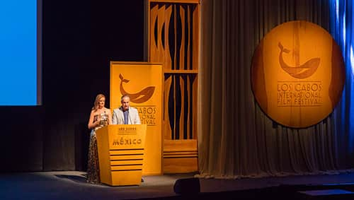

Enmarcado en uno de los lugares más hermosos de nuestro país, el Festival Internacional de Cine de Los Cabos es un espacio único que busca construir un punto de encuentro y diálogo entre las cinematografías de México, Estados Unidos y Canadá.
El Festival se ha consolidado como uno de los eventos más esperados por el público, gracias a las películas que conforman su programación, a los invitados especiales y a las actividades para los profesionales de la industria fílmica.
Consolidarnos como el festival de cine de mayor relevancia para la industria fílmica de Norteamérica, creando vínculos de colaboración útiles y trascendentes entre los miembros de la comunidad cinematográfica de esta región; fomentando la creación de audiencias reflexivas en torno a la programación y actividades paralelas presentadas en cada edición.
Contribuir a impulsar la cultura cinematográfica nacional mediante una propuesta fílmica y de actividades colaterales que promueva y fomente la discusión, la creación y la reflexión tanto entre los profesionales como en el público del festival. Además buscamos ser la plataforma de despegue y visibilidad para el talento de Baja California Sur y para su vinculación con la comunidad cinematográfica nacional e internacional.
Creemos en el cine y en su poder como un motor de cambio individual y colectivo; un promotor de la reflexión; un alimento cultural que nos nutre y nos convierte en seres humanos más amplios.